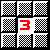
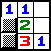
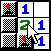

Выполнил: Коротенко Данил Павлович, студент группы ИС-43, факультета ИОТ
Тема: «Сапер»
Постановка задачи: Реализовать игру подобную той которая входит в стандартный комплект ОС Windows.
Описание игры «Сапер»:
На поле размером m x n и разделенном на клеточки, случайным образом расставлены мины.
Цель игры: Обнаружить все мины, руководствуясь подсказками, ни разу не ошибившись (ведь сапер ошибается только раз в жизни ;) )
При нажатие на клетку поля, в ней выводится подсказка, если конечно, в этой клеточке не оказывается мина, что само собой приводит к завершению игры. Подсказка заключается в количестве мин находящихся рядом с нажатой клеточкой.
Если рядом с клеточкой нет мин, то клетка просто очищается. Руководствуясь подсказками других клеток можно обнаружить все мины.
Нажатием правой кнопки мыши клеточка помечается флажком. Игра заканчивается тогда, когда флажками помечены все клеточки содержащие мины.
Описание программы, и пояснения к коду
Интерфейс программы ничем не отличается от стандартных приложений Windows. С помощью опций меню можно начать новую игру, а также выбрать уровень сложности, и выйти из программы.
Код программы написан с использованием библиотеки Qt от компании Trolltech. Qt предоставляет наглядные и функциональные классы для создания интерфейса в системе Windows.
Для создания окна, от класса QWidget был унаследован класс Saper который
добавляет в окно свои методы и элементы. Меню было созданно с помощью создания
объектов классов QMenuBar и QPopupMenu. Для отображения оставшегося количества
бомб, был использован QLCDNumber. Поле игры состоит из вектора кнопок - QPtrVector<QPushButton>.
Для обработки событий мыши были использованы процедуры: void mousePressEvent(QMouseEvent *e) и void
slotButtonClicked(). Процедура slotButtonClicked() отлавливает щелчок мышью по кнопочке
поля, а процедура mousePressEvent(QMouseEvent *e) обрабатывает нажатие правой кнопки мыши
на поле.